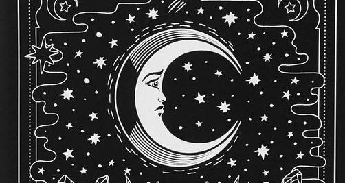

What is Selenophile?
"seleno"; prefix term for anything that is connected with the moon or its shape. "phile"; suffix term for someone who is in love with or obsessed with.
"selenophile": person who is attracted by the moon, moon lover.
In Greek mythology, Selene is the goddess of the moon. She is the daughter of the Titans, Hyperion and Theia, and sister of the sun-god Helios, and Eos, goddess of the dawn. She drives her moon chariot across the heavens. Several lovers are attributed to her in various myths, including Zeus, Pan, and the mortal Endymion. In classical times, Selene was often identified with Artemis, much as her brother, Helios, was identified with Apollo.
Selene and Artemis were also associated with Hecate, and all three were regarded as lunar goddesses, but only Selene was regarded as the personification of the moon itself. Her Roman equivalent is Luna
Philosophical/Metaphysical perspective
Moon symbolism in Native American tribes (Navajo, Eskimo, Pueblo come to mind), along with African, Japanese, Maori, Teutonic, Oceania, and Sumerian-Semitic groups refer to the moon as a masculine force.
More intriguing than gender, is the means by which the moon wields her force and influence. She is considered a luminary, but she produces no light of her own accord. She is reliant upon the sun’s light to reflect (mirror) her image to our earthly eyes
Disclaimer:
I had decided that Islamic faith in no way bars muslim from free and critical inquiry into ethics, history and society. I embrace Islam to bring a wider world in, not to shut it out.
The ancient Greeks make unsettling reading. Greek mythological stories which everyone is familiar with are defined to a great extent by conflicting forces